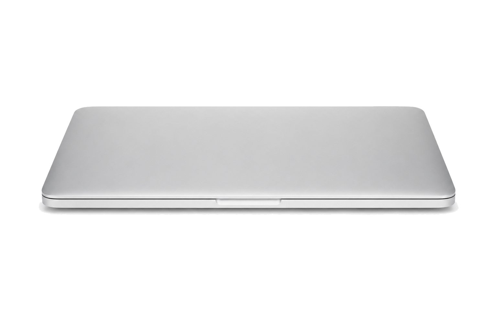

A entrevista
Uma conversa gratuita com a neuropsicóloga. Ela conhece o caso, você conhece a Denise e a clínica — e sai com uma direção: se o cuidado começa por terapia, se vale consultar mais de um profissional ou qual especialidade entra primeiro.
Transformando limites em possibilidades
Neuroreabilitação e saúde mental em Catu-BA presencial e online
Quando o caminho parece encoberto, o cuidado certo revela novas possibilidades — um passo de cada vez.
Uma conversa gratuita com a neuropsicóloga. Ela conhece o caso, você conhece a Denise e a clínica — e sai com uma direção: se o cuidado começa por terapia, se vale consultar mais de um profissional ou qual especialidade entra primeiro.
Um levantamento detalhado da história: sintomas, saúde, medicamentos, rotina, escola ou trabalho e o que a família observa no dia a dia. É essa escuta estruturada que transforma a queixa em hipóteses clínicas.
Com o caminho definido, começam as avaliações, terapias e consultas indicadas para o seu caso — na ordem e no ritmo que fazem sentido, com um ou mais profissionais da equipe trabalhando de forma integrada.
O progresso é acompanhado de perto: metas são revisadas, conquistas aparecem na rotina e o plano se ajusta conforme a vida responde. É assim que limites viram possibilidades.
Você não precisa chegar com a terapia escolhida. Chegue com a história; a equipe ajuda a transformar isso em próximo passo.
Orientar meu caso
Atendimento online com a mesma escuta clínica e direção técnica do presencial. Para quem mora em outra cidade, está viajando ou prefere o conforto de casa.
Agendar atendimento onlineÀ frente da Reability, Denise une neuropsicologia, saúde mental e reabilitação cognitiva em avaliações e planos terapêuticos individualizados — construídos para funcionar na vida real, não só no consultório.
Psicóloga desde 2013 e especialista em Neuropsicologia pelo Conselho Federal de Psicologia, com formações em Saúde Mental, ABA, Gestão de Pessoas e Reabilitação Cognitiva pela USP.
Também é formada em Acupuntura e Laserterapia, recursos que aplica no cuidado da dor, da tensão e da inflamação — sempre integrados ao plano terapêutico de cada paciente.
Hoje, cursa Fisioterapia: mais uma camada de conhecimento para enxergar, além da cognição e das emoções, o corpo e o movimento de quem ela acompanha.
Sua missão ganhou forma ao lado de pacientes idosos e em cuidados paliativos — foi cuidando de quem enfrentava os maiores limites que ela aprendeu a enxergar possibilidades onde parecia não haver. A Reability nasceu para multiplicar esse cuidado.
Início da trajetória como psicóloga.
Atuação clínica com pacientes neurológicos e neurodesenvolvimento.
Consolidação da especialização em Neuropsicologia.
Formação em Reabilitação Cognitiva pela USP.
Nascimento da Reability, em Catu-BA.
anos de experiência clínica
pacientes atendidos na carreira
especializações e formações
Foi com essa bagagem que Denise decidiu criar a Reability: um lugar que reúne as especialidades que se complementam no cuidado de cada paciente — presencial em Catu-BA e online no Brasil e no mundo.
Profissionais de especialidades diferentes que conversam entre si sobre o mesmo paciente. Toque em um nome para conhecer a formação e as áreas de atuação.
Cada profissional atua dentro das atribuições do seu conselho de classe. As condutas dependem de avaliação individual.
R. Simões Filho, 350 · Boa Vista, Catu-BA. Aqui, cada história é ouvida com calma: a equipe entende as prioridades e orienta por onde o cuidado deve começar.
Toque em uma especialidade para ver o que ela cuida e quando faz sentido no seu caso.
Algumas das condições que a equipe acompanha — e as especialidades que costumam entrar no plano de cada uma.
Não encontrou a sua situação? Pergunte no WhatsApp — a entrevista inicial com a neuropsicóloga é gratuita.
Um espaço aberto com orientações práticas para o dia a dia, PDFs gratuitos preparados pela equipe e os jogos que colocam memória, atenção e raciocínio em movimento.
Respostas diretas sobre avaliação, reembolso e como começar o cuidado.
Falar com a equipeNão. Muitas famílias chegam justamente porque ainda têm dúvidas. A avaliação ajuda a entender sinais, histórico, rotina e quais caminhos de cuidado fazem sentido.
Começa com a entrevista e a anamnese; depois vêm sessões com testes padronizados de memória, atenção, linguagem e raciocínio. Ao final, você recebe a devolutiva e o laudo, com orientações práticas para família, escola, trabalho e outros profissionais.
Emitimos notas e recibos para você solicitar reembolso no seu convênio — muitos planos devolvem parte ou todo o valor das sessões. A equipe orienta o passo a passo do pedido.
É um recurso não invasivo e indolor que estimula regiões do cérebro para potencializar o tratamento. Com indicação, pode apoiar dor crônica, humor, atenção e a reabilitação cognitiva e motora — sempre como parte do plano, nunca isolada.
Um acompanhamento para quem tem dificuldades reais com o ato de comer: seletividade, recusa alimentar e desafios comuns no TEA. Vai além do cardápio — trabalha a relação com a comida, no ritmo de cada pessoa.
Um treino estruturado das funções que o cérebro usa no dia a dia — memória, atenção, linguagem, planejamento — após AVC, traumatismo, demência ou outras condições. O objetivo é recuperar função e autonomia na vida real, não só nos exercícios.
Conte o que está acontecendo e receba o próximo passo indicado, valores e horários disponíveis. A primeira entrevista com a neuropsicóloga é gratuita.